전자계산기기사 (2021-09-12 기출문제)
1과목: 시스템 프로그래밍
1. 어셈블리 언어와 관련한 설명으로 틀린 것은?
- 예약어(Reserved Word)는 특정 시간에 사용할 수 있도록 사용자가 정의한 명령어들의 집합이다.
- 식별자(Identifier)는 프로그래머가 선택한 이름으로 변수나 상수 등에 사용된다.
- 디렉티브(Directive)는 프로그램의 소스코드를 어셈블할 때 어셈블러가 인식하고 활용하는 명령어이다.
- 명령어(Instruction)는 프로그램이 메모리에 탑재되어 실행될 때 프로세서에 의하여 실행되는 문장이다.
(정답률: 알수없음)

2. 컴파일러와 인터프리터에 대한 설명으로 틀린 것은?
- 일반적으로 컴파일러는 한번 번역한 후 다시 번역하지 않으므로 실행속도가 빠르다.
- 컴파일러는 고급언어로 작성된 프로그램 전체를 목적 프로그램으로 번역한다.
- 인터프리트는 줄 단위로 번역 및 실행되기 때문에 원시프로그램의 변화에 대한 반응이 비교적 빠르다.
- 인터프리트는 고급언어로 작성된 프로그램을 한 줄 단위로 받아들여 목적프로그램으로 번역한다
(정답률: 알수없음)
3. 절대 로더(Absolute Loader)에 대한 설명이 아닌 것은?
- 연결 작업은 프로그래머가 한다.
- 재배치 작업은 어셈블러가 한다.
- 여러 개의 부 프로그램을 사용할 경우 해당 부 프로그램들에 같은 주소를 할당한다.
- 언어 번역기로부터 생성된 목적 프로그램을 언어 번역한다.
(정답률: 알수없음)
4. 일반적인 운영체제의 성능 평가 기준이 아닌 것은?
- 비용
- 신뢰도
- 처리 능력
- 사용 가능도
(정답률: 알수없음)
5. 정보 관리를 위한 세그먼테이션(Segmentation)과 관련한 설명으로 틀린 것은?
- 기억 장치의 버퍼는 기능적으로 블록/페이지에 해당한다.
- 임의 크기를 갖고 동적으로 커질 수 있다.
- 파일 시스템과 세그먼트의 개념은 모두 물리적인 정보의 구성을 의미한다.
- 2차원 번지 공간을 제공할 수 있다.
(정답률: 알수없음)
6. 어셈블리를 두 개의 패스로 구성하는 주된 이유는?
- 한 개의 패스만을 사용하면 메모리가 많이 소요된다.
- 패스 1, 2의 어셈블러 프로그램이 작아서 경제적이다.
- 기호를 정의하기 전에 사용할 수 있어 프로그램 작성이 용이하다.
- 한 개의 패스만을 사용하면 프로그램의 크기가 증가하여 유지보수가 어렵다.
(정답률: 알수없음)
7. 프로그래밍 언어와 관련한 설명으로 틀린 것은?
- 기계어는 0과 1의 2진수 형태로 표현되며 수행시간이 빠른 편이다.
- 어셈블리 언어는 기계어와 1:1로 대응되는 기호로 이루어진 언어이다.
- 기계어는 기종에 따라 기계어가 동일하므로 호환성이 높다.
- 고급언어는 기계어로 번역하기 위해 컴파일러나 인터프리터를 사용한다.
(정답률: 알수없음)
8. 운영체제의 유형 중 프로세서 스케줄링과 다중 프로그래밍을 사용해 각 사용자에게 컴퓨터를 시간적으로 분할하여 나누어주는 개념의 시스템은?
- 다중 프로그래밍 시스템
- 다중처리 시스템
- 시분할 시스템
- 분산처리 시스템
(정답률: 알수없음)
9. 시스템 프로그램이 아닌 것은?
- Compiler
- Repeater
- Loader
- Operating System
(정답률: 알수없음)
10. 매크로 프로세서의 2 패스에서 사용되는 데이터베이스가 아닌 것은?
- 매크로 정의 테이블
- 매크로 이름 테이블
- 매크로 정의 테이블 계수기
- 매크로 제어 테이블 계수기
(정답률: 알수없음)
11. 아래의 이진 연산(binary operation)의 실행결과가 저장되는 장소는?
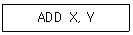
- X
- Y
- 스택
- 누산기
(정답률: 알수없음)
12. 매크로 프로세서가 기본적으로 수행해야 할 작업의 종류가 아닌 것은?
- 매크로 정의 인식
- 매크로 정의 저장
- 매크로 호출 인식
- 매크로 호출 저장
(정답률: 알수없음)
13. 로더(Loader)의 기능에 해당하지 않는 것은?
- Allocation
- Forwarding
- Linking
- Loading
(정답률: 알수없음)
14. 페이지 교체 기법 중 가장 오래 동안 사용하지 않은 페이지를 교체할 페이지로 선택하는 기법은?
- FIFO
- LRU
- LFU
- SECOND CHANCE
(정답률: 알수없음)
15. 목적 모듈 간의 참조 내용 분석 및 재배치 과정을 통해 독립적으로 번역된 하나 이상의 목적 모듈 및 적재 모듈로부터 하나의 적재 모듈을 만드는데 사용하는 프로그램을 의미하는 것은?
- Parser
- Linkage Editor
- BNF
- Associative Array
(정답률: 알수없음)
16. 다음과 같은 프로세스들이 차례로 준비상태 큐에 들어왔을 경우 SJF 스케줄링 기법을 이용하여 제출시간이 없는 경우의 평균 실행시간은?
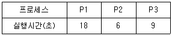
- 10초
- 11초
- 18초
- 24초
(정답률: 알수없음)
17. 로더의 기능 중 재배치(Relocation)에 대한 설명으로 옳은 것은?
- 기억 장소 내의 공간을 할당한다.
- 주소 상수(Address Constant)와 같이 주소에 의존하는 위치를 할당된 기억장소와 일치하도록 조정한다.
- 실질적으로 기계 명령어와 자료를 주기억장치에 배치한다.
- 목적 프로그램들 간의 연결을 통해 기호적 참조를 해결한다.
(정답률: 알수없음)
18. 일반적인 기능의 로더로, 로더의 네 가지 기본기능을 모두 수행하는 로더는?
- Absolute Loader
- Direct Linking Loader
- Allocating Loader
- Compile And Go Loader
(정답률: 알수없음)
19. 기계어보다 어셈블리어를 사용하는 것의 장점이 아닌 것은?
- 목적 코드로 변환하기 위한 별도의 프로그램이 필요하지 않다.
- 절대 주소 대신 기호를 사용한다.
- 가독성이 좋다.
- 프로그램에 자료 도입이 쉽다.
(정답률: 알수없음)
20. 파일 시스템과 관련한 설명으로 틀린 것은?
- 대표적인 유닉스 계열의 파일 시스템으로 FAT, NTFS, STP 등이 있다.
- 정보 관리를 행하는 운영체제 모듈로 불 수 있다.
- 정보 공유를 승인되지 않은 참조로부터 보호하는 기능을 제공한다.
- 파일은 정보 단위를 한 단위로서 취급할 때 상호 관련된 데이터 요소의 집합으로 볼 수 있다.
(정답률: 알수없음)
2과목: 전자계산기구조
21. 자기테이프에서 많이 쓰이는 단위인 bpi의 의미는?
- byte per inch
- bit per inch
- baud per inch
- bin per inch
(정답률: 알수없음)
22. 다음 마이크로 오퍼레이션과 관련이 있는 것은? (단, EAC는 끝자리 올림과 누산기를 의마한다.)
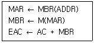
- AND
- ADD
- JMP
- BSA
(정답률: 알수없음)
23. 병렬 프로세서 시스템에서 한 번에 한 개씩의 명령어와 데이터를 순서대로 처리하는 단일 프로세서(Uniprocessor) 시스템을 의마하는 것은?
- MISD
- MIMD
- SISD
- SSMD
(정답률: 알수없음)
24. 인터럽트의 발생 원인이 아닌 것은?
- 정전 또는 전원 이상
- 임의의 부 프로그램에 대한 호출
- CPU의 기능적인 오류 동작 발생
- 타이머에 의해 규정된 시간을 알리는 경우
(정답률: 알수없음)
25. 다음 조합 논리 회로의 명칭으로 옳은 것은? (단, 입력변수는 A와 B, 출력변수는 X와 Y이다.)
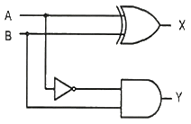
- 전가산기
- 반가산기
- 전감산기
- 반감산기
(정답률: 알수없음)
26. 레지스터 사이의 데이터 전송방법에 대한 설명으로 틀린 것은?
- 직렬 전송방식에 의한 레지스터 전송은 하나의 클록 펄스 동안에 하나의 비트가 전송되고, 이러한 비트 단위 전송이 모여 워드를 전송하는 방식을 말한다.
- 병렬 전송방식에 의한 레지스터 전송은 하나의 클록 펄스 동안에 레지스터 내의 모든 비트, 즉 워드가 동시에 전송되는 방식을 말한다.
- 병렬 전송방식에 의한 레지스터 전송은 직렬 전송방식에 비해 속도가 빠르고 결선의 수가 적다는 장점을 가지고 있다.
- 버스 전송방식에 의한 레지스터 전송은 공통의 데이터 전송 통로를 이용하는 방식이다.
(정답률: 알수없음)
27. 마이크로사이클(Microcycle)에 대한 설명으로 옳은 것은?
- 마이크로오퍼레이션을 수행하는데 필요한 시간으로 CPU Cycle Time이라고도 한다.
- 동기 가변식은 모든 마이크로오퍼레이션의 동작시간이 같아야 사용할 수 있다.
- CPU가 접근하는 메모리의 용량을 의마한다.
- 마이크로오퍼레이션들의 수행시간이 유사할 경우 동기 가변식은 동기 고정식에 비해 제어가 간단하다.
(정답률: 알수없음)
28. 인터럽트의 체제의 기본적인 요소가 아닌 것은?
- 인터럽트 처리 기능
- 인터럽트 요청신호
- 인터럽트 상태와 DMA
- 인터럽트 서비스(취급) 루틴
(정답률: 알수없음)
29. RAM과 관련한 설명으로 틀린 것은?
- RAM은 데이터나 프로그램을 일시적으로 기억할 때 사용되며 프로그램의 수행에 따라 그 내용이 계속 변할 수 있다.
- DRAM은 반도체 자체에 데이터를 저장하는 반면, SRAM은 데이터를 커패시터에 저장하기 때문에 주기적인 충전이 필요하다.
- 일반적으로 SRAM은 DRAM보다 접근속도(Access Time)가 빠르다.
- SRAM의 기억 소자는 플립플롭으로 구성되어 있다.
(정답률: 알수없음)
30. 기억장치에 기억된 정보를 접근(Access)할 때 주소를 사용하는 것이 아니라 기억된 정보를 이용하여 원하는 정보를 찾는 기억장치는?
- 주기억장치
- 연관기억장치
- 제어기억장치
- 가상기억장치
(정답률: 알수없음)
31. 최대 2n개의 입력이 들어와 n개의 선택선(Selection Line)에 의해서 1개의 출력을 내보내는 논리회로는?
- Multiplexer
- Demultiplexer
- Contributor
- Changer
(정답률: 알수없음)
32. 자기 테이프에 대한 설명으로 틀린 것은?
- Direct access가 가능하다.
- 일반적을 각 블록 사이에 간격(gap)이 존재한다.
- 자기 디스크와 마찬가지로 연속된 블록들 단위로 읽히고 기록될 수 있다.
- Sequential access가 가능하다
(정답률: 알수없음)
33. 모든 처리장치 또는 프로세스 요소(PE:Processing Element)들이 하나의 제어 유닛(Control Unit)의 통제하에 동기적으로 동작하는 시스템은?
- 다중 처리기(Multi Processor)
- 비균열 처리기(Nonuniform Processor)
- 배열 처리기(Array Processor)
- 클러스터 처리기(Cluster Processor)
(정답률: 알수없음)
34. 인스트럭션 수행을 위한 메이저 상태를 설명한 것으로 옳은 것은?
- Execute 상태는 간접주소 지정방식의 경우에만 수행된다.
- 명령어를 기억장치 내에서 가져오기 위한 동작을 fetch라 한다.
- CPU의 현재 상태를 보관하기 위한 기억장치 접근을 indirect라 한다.
- 기억장치의 현재 상태를 말한다.
(정답률: 알수없음)
35. 인터럽트 벡터에 필수적인 것은?
- 분기번지
- 드럼
- 제어규칙
- 누산기
(정답률: 알수없음)
36. Tc =50ns, Tm =400ns인 시스템에서 캐쉬의 적중률이 70%라 가정할 때, 평균 기억장치 액세스 시간(Ta)은? (단, Tc는 캐시 접근 시간, Tm은 주기억장치 접근 시간이다.)
- 67.5ns
- 85ns
- 120ns
- 155ns
(정답률: 알수없음)
37. 레지스터에 대한 설명으로 틀린 것은?
- PC(Program Counter): 다음에 인출할 명령어의 주소를 갖는 레지스터
- IR(Instruction Register): 주기억장치인 RAM으로부터 가장 최근에 인출한 명령어를 저장하고 있는 레지스터
- MBR(Memory Buffer Register): 액세스할 기억장치의 주소를 갖는 레지스터
- AC(Accumulator): 연산의 결과를 일시적으로 저장하는 레지스터
(정답률: 알수없음)
38. 두 개 이상의 입력이 있을 경우 입력 하나에서 나머지 입력들을 뺄셈 연산해 그 차이를 출력하는 조합 논리회로는?
- Adder
- Comparator
- Decoder
- Subtractor
(정답률: 알수없음)
39. 중앙처리장치가 인출(fetch)인 상태에서 주소부분이 직접 주소일 경우 제어점을 제어하기 위한 데이터는?
- 플래그
- 프로그램 카운터
- 인터럽터 호출 신호
- 명령어의 명령 코드
(정답률: 알수없음)
40. 입출력 채널과 관련한 설명으로 틀린 것은?
- 선택 채널(Selector channel)은 랜덤 방식으로 데이터를 전송한다.
- 다중 채널(Multiplexer channel)은 연결된 입출력 장치들을 시분할(Time Sharing)하여 입출력 할 수 있다.
- 블록 다중 채널(Block multiplexer channel)은 선택 채널과 다중 채널을 결합한 방식으로 볼 수 있다.
- 채널 중 선택 채널은 비교적 고속 전송에 적합한 방식이다.
(정답률: 알수없음)
3과목: 마이크로전자계산기
41. 주소 지정 방식 중 가장 빠른 것은?
- Direct Addressing Mode
- Calculate Addressing Mode
- Immediate Addressing Mode
- Indirect Addressing Mode
(정답률: 알수없음)
42. 데스크톱 컴퓨터의 메인보드에 대한 산업계의 개방형 규격으로 마이크로프로세서와 확장 슬롯들의 배치를 변화시킴으로써 메인보드 설계를 개선한 것은?
- ATX
- AG
- PCI
- IrDA
(정답률: 알수없음)
43. 일반적인 입력장치의 종류가 아닌 것은?
- 레이저 프린터
- 스캐너
- OCR
- BCR
(정답률: 알수없음)
44. 명령 레지스터, 명령 해독기, 순차 카운터 등을 구성 요소로 가지는 장치는?
- 기억 장치
- 연산 장치
- 입력 장치
- 제어 장치
(정답률: 알수없음)
45. 데이터를 전송하는 데이터 입출력 방식이 아닌 것은?
- Programmed Input/Output 방식
- Processed Input/Output 방식
- Interrupt Input/Output 방식
- DMA Input/Output 방식
(정답률: 알수없음)
46. 보조기억장치와 관련한 설명으로 틀린 것은?
- 일반적으로 주기억장치에 비해 액세스 속도는 느리지만 대용량이다.
- 휘발성 기억장치로 전원이 꺼지면 기억된 내용이 소멸된다.
- 자기 테이프는 순서에 의해서만 접근하는 기억장치(SASD)라고도 한다.
- 자기 디스크는 주소에 의하여 임의의 곳에 직접 접근이 가능한 기억장치(DASD)이다.
(정답률: 알수없음)
47. 명령어의 주소부를 유효 주소로 사용하는 주소지정방식은?
- Indirect Addressing Mode
- Immediate Addressing Mode
- Direct Addressing Mode
- Implied Addressing Mode
(정답률: 알수없음)
48. 레지스터 간의 자료 전송 방식이 아닌 것은?
- 직렬 전송
- 병렬 전송
- 버스 전송
- RF 전송
(정답률: 알수없음)
49. 입ㆍ출력을 전담 수행하는 채널(Channel) 중 일시에 여러 장치들을 연결하고 주로 터미널, 프린터와 같은 저속의 장치들을 연결하는 채널은?
- Selector Channel
- Command Multiplexer Channel
- Chaining Channel
- Byte Multiplexer Channel
(정답률: 알수없음)
50. 운영체제의 구성요소를 기능에 따라 분류할 때, 처리 프로그램에 해당하지 않는 것은?
- Service Program
- Language Translator Program
- Compiler
- Job Scheduler
(정답률: 알수없음)
51. 메모리 접근 방식인 페이징(Paging)의 설명으로 옳은 것은?
- 가상 주소는 물리 주소와 동일하다.
- 세그먼트 시스템의 주소 방식과 일치한다.
- 주소 공간을 동일한 크기인 페이지 단위로 나눈다.
- 메모리 공간을 모두 사용하기 때문에 내부 단편화가 생기지 않는다.
(정답률: 알수없음)
52. 원하는 데이터가 저장된 기억장소 근처로 이동한 다음, 순차적 검색을 통해서 원하는 데이터에 접근하는 방법은?
- Sequential Access
- Indirect Access
- Direct Access
- Branch Access
(정답률: 알수없음)
53. I/O 효율을 높이기 위해 I/O의 내용을 디스크 등에 모아 두었다가 처리하는 방식은?
- Relocationg
- Pipelining
- Spooling
- Overlapping
(정답률: 알수없음)
54. 제어프로그램 개발 시 중요하게 고려되어야 할 사항이 아닌 것은?
- 수행 속도가 빠르도록 설계한다.
- 기억장소를 효율적으로 활용한다.
- 저급언어보다는 고급언어를 이용하여 작성해야 한다.
- 오류를 최대한 줄여 정확한 제어가 이루어지도록 한다.
(정답률: 알수없음)
55. 스택 포인터(SP : Stack Pointer)와 관련한 설명으로 틀린 것은?
- 스택 포인터의 구조는 FIFO 레지스터 구조로 되어 있다.
- 스택 영역의 번지를 지정해주는 포인터이다.
- 스택 영역(Stack Area)과 함께 스택을 구성하는 요소이다.
- 데이터가 스택으로 피신되면 스택 영역의 번지가 감소하는 방향으로 데이터가 저장된다.
(정답률: 알수없음)
56. 데이터 처리 명령어 중 산술 연산 명령어가 아닌 것은?
- ADD
- AND
- INC
- DIV
(정답률: 알수없음)
57. 하나의 서브루틴 속에 존재하는 또 하나의 서브루틴, 즉, 서로 다른 서브루틴 중에서 호출되는 서브루틴을 뜻하는 것은?
- Nested Subroutine
- Open Subroutine
- Closed Subroutine
- Cross Subroutine
(정답률: 알수없음)
58. 주소 지정 방식을 결정하기 위해 고려해야 할 사항으로 옳은 것은?
- 피연산자 부분을 가능한 길게 지정해야만 한다.
- 수행 속도는 고려할 필요가 없다.
- 지정할 수 있는 범위가 넓을수록 좋다.
- 마이크로프로세서에서는 한 가지만 사용해야 한다.
(정답률: 알수없음)
59. 컴퓨터와 주변 장치 사이에서 데이터 전송시에 입ㆍ출력 주기나 완료를 나타내는 2개의 제어 신호를 사용하여 데이터 입출력을 하는 방식은?
- Strobe Control 방법
- Polling 방법
- Interrupt 방법
- Handshaking 방법
(정답률: 알수없음)
60. 스택(Stack)과 관계없는 것은?
- ALU
- PUSH와 POP
- Subroutine 수행
- Reverse Polish Notation을 이용한 수식 계산
(정답률: 알수없음)
4과목: 논리회로
61. 논리식
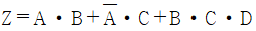
를 간략화 하면?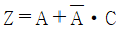
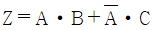
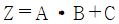
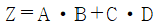
(정답률: 알수없음)
62. 다음 논리회로의 명칭으로 옳은 것은?
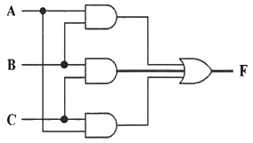
- 다수결 회로
- 비교 회로
- 패리티 체크 회로
- 일치 회로
(정답률: 알수없음)
63. 부호의 2의 보수(Signed 2's Complement)로 표시된 BCD 수 중 –9를 6자리로 표시한 경우 옳은 것은?
- 101001
- 110110
- 110111
- 001001
(정답률: 알수없음)
64. 다음 논리 회로와 등가적으로 동작되는 스위치 회로는?
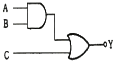
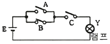
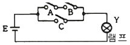
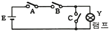
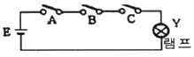
(정답률: 알수없음)
65. excess-3 코드 1100 0110을 10진수로 나타내면?
- 306
- 201
- 198
- 93
(정답률: 알수없음)
66. 2진수 11001011(2)을 그레이 코드로 변환하면?
- 01010001(G)
- 11101111(G)
- 10101110(G)
- 00010000(G)
(정답률: 알수없음)
67. 다음 회로의 명칭은?
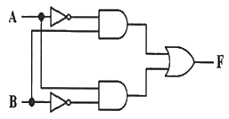
- 일치 회로
- 불일치 회로
- 비교 회로
- 다수결 회로
(정답률: 알수없음)
68. 16진수 AF63을 8진수로 나타내면?
- 135713(8)
- 152734(8)
- 147325(8)
- 127543(8)
(정답률: 알수없음)
69. 다음 중 수의 크기가 다른 것은?
- 3400(10)
- D48(16)
- 6510(8)
- 110101001010(2)
(정답률: 알수없음)
70. 10진수 42+29를 3-초과 코드(Excess-3 code)로 계산한 결과로 옳은 것은?
- 1010 1010
- 1010 0100
- 1101 1110
- 0111 1000
(정답률: 알수없음)
71. 부호와 2의 보수(Signed 2's complement)로 나타낸 수를 좌측 방향으로 산술시프트 할 때 보충되는 새로운 비트는 무엇인가?
- 0
- 1
- LSB
- MSB
(정답률: 알수없음)
72. 다음 회로에서 초기값인 Q3Q2Q1Q0 = 0000 상태에서 클럭이 6개 입력된 후의 출력은? (단, 플립플롭 출력 순서는 왼쪽부터 Q0Q1Q2Q3이다.)
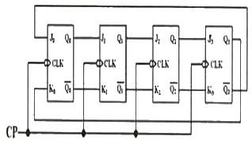
- 0011
- 1100
- 0001
- 1000
(정답률: 알수없음)
73. 임의의 시간에 한 플립플롭만 논리 1이 되고 나머지 플립플롭은 논리 0이 되는 카운터로써, 논리 1은 입력펄스에 따라 그 위치가 한쪽 방향으로 순환하는 회로는?
- 링 카운터
- 시프트 카운터
- Ripple 카운터
- 존슨 카운터
(정답률: 알수없음)
74. N-Bit의 코드화된 정보를 입력으로 하여 그 코드의 각 Bit 조합에 따라 2N개의 출력으로 번역하는 회로는?
- 멀티플렉서
- 인코더
- 디코더
- 멀티플렉스
(정답률: 알수없음)
75. 1선으로 정보를 받아서 2개 이상의 출력이 가능한 선들 중 하나를 선택하여 받은 정보를 전송하는 회로는?
- DECODER
- ENCODER
- DEMULTIPLEXER
- MULTIPLEXER
(정답률: 알수없음)
76. 다음 상태 변화를 가지는 카운터는 최소 몇 개의 플립플롭으로 구성되는가?
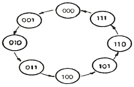
- 2개
- 3개
- 4개
- 8개
(정답률: 알수없음)
77. 디코더를 이용하여 전가산기 구성 시 필요한 OR게이터의 수로 옳은 것은?
- 2입력 OR게이트 2개
- 2입력 OR게이트 4개
- 4입력 OR게이트 1개
- 4입력 OR게이트 2개
(정답률: 알수없음)
78. T 플립플롭이 필요한데, 주어진 부품은 JK플립플롭밖에 없다. 이 경우 어떻게 문제를 해결하는 것이 좋은가?
- JK 플립플롭 하나와 2-input NOR 게이트 하나로 하나의 T플립플롭을 만들 수 있다.
- JK 플립플롭 하나와 2-input XOR 게이트 하나로 하나의 T플립플롭을 만들 수 있다.
- JK 플립플롭 하나와 인버터 하나로 하나의 T플립플롭을 만들 수 있다.
- JK 플립플롭 하나만으로 JK 입력을 묶어서 T플립플롭을 만들 수 있다.
(정답률: 알수없음)
79. JK 마스터/슬레이브 플립플롭에 대한 설명 중 틀린 것은?
- 홀드 시간이 요구되지 않는다.
- Edge trigger 방식보다 잡음에 영향이 적다.
- 마스터 및 슬레이브 플립플롭으로 구성된다.
- JK플립플롭 2개와 Not gate 1개로 구성된다.
(정답률: 알수없음)
80. 다음 계수 회로는 몇 진 카운터(Counter) 회로인가?
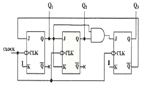
- 5진 카운터
- 6진 카운터
- 7진 카운터
- 8진 카운터
(정답률: 알수없음)
5과목: 데이터통신
81. 다음이 설명하고 있는 데이터 링크 제어 프로토콜은?
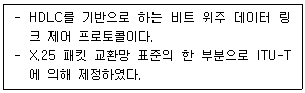
- PPP
- ADCCP
- LAP-B
- SDLC
(정답률: 알수없음)
82. 다음이 설명하고 있는 라우팅 프로토콜은?
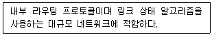
- BGP
- RIP
- OSPF
- EGP
(정답률: 알수없음)
83. OSI 7계층 중 통신회선을 통하여 비트전송을 수행하기 위하여 전기적, 기계적인 제어기능을 수행하는 계층은?
- Physical Layer
- Datalink Layer
- Network Layer
- Application Layer
(정답률: 알수없음)
84. 전송할 데이터가 있는 채널만 차례로 시간슬롯을 이용하여 데이터와 함께 주소정보를 헤더로 붙여 전송하는 다중화 방식은?
- 주파수 분할 다중화
- 역 다중화
- 예약 시분하 다중화
- 통계적 시분할 다중화
(정답률: 알수없음)
85. 송신측이 한 개의 블록을 전송 후, 수신측에서 에러의 발생을 매번 점검한 다음 블록을 전송해 나가는 ARQ 방식은?
- Go-back-N ARQ
- Repeat-Repeat ARQ
- Adaptive ARQ
- Stop-and-Wait ARQ
(정답률: 알수없음)
86. PCM 과정 중 양자화 과정에서 레벨 수가 128레벨인 경우 몇 비트로 부호화 되는가?
- 7 bit
- 8 bit
- 9 bit
- 10 bit
(정답률: 알수없음)
87. 30개의 구간을 망형으로 연결하려할 때 필요한 회선 수는?
- 30개
- 265개
- 435개
- 1225개
(정답률: 알수없음)
88. OSI 7계층 중 통신망을 통해 목적지까지 패킷 전달을 담당하는 계층은?
- 데이터링크 계층
- 네트워크 계층
- 응용 계층
- 표현 계층
(정답률: 알수없음)
89. IP 프로토콜에서는 오류 보고와 오류 수정기능, 호스트와 관리 질의를 위한 메커니즘이 없기 때문에 이를 보완하기 위해 설계된 것은?
- SMTP
- TFTP
- SNMP
- ICMP
(정답률: 알수없음)
90. CSMA/CD에서 사용되는 LAN 표준 프로토콜은?
- IEEE 802.3
- IEEE 802.4
- IEEE 802.5
- IEEE 802.12
(정답률: 알수없음)
91. HDLC 프레임 구성에서 플래그는 전송프레임의 시작과 끝을 나타낸다. 이 플래그의 고유 비트 패턴은?
- 01111110
- 11111111
- 00000000
- 10000001
(정답률: 알수없음)
92. 위상을 이용한 디지털 변조 방식은?
- ASK
- FSK
- PSK
- FM
(정답률: 알수없음)
93. 패킷 교환망에서 DCE와 DTE 사이에 이루어지는 상호작용을 규정한 프로토콜은?
- X.25
- TCP
- UDP
- IP
(정답률: 알수없음)
94. 8진 PSK 변조방식에서 변조속도가 2400[Baud]일 때 정보신호의 전송속도는(bps)는?
- 2400
- 480
- 7200
- 9600
(정답률: 알수없음)
95. 펄스 파형을 그대로 변조없이 전송하는 방식은?
- 베이스 밴드 전송방식
- 직렬 전송방식
- 대역 전송방식
- 병렬 전송방식
(정답률: 알수없음)
96. 회선교환 방식에 대한 설명으로 틀린 것은?
- 고정된 대역폭으로 데이터 전송
- 회선이 설정되어 통신이 완료될 때까지 회선을 물리적으로 접속
- 수신노드에서 패킷을 재순서화하는 과정 필요
- 실시간 대화형 가능
(정답률: 알수없음)
97. TCP와 UDP가 제공하는 서비스를 옳게 연결한 것은?
- TCP: 비연결형, UDP: 비연결형
- TCP: 비연결형, UDP: 연결형
- TCP: 연결형, UDP: 연결형
- TCP: 연결형, UDP: 비연결형
(정답률: 알수없음)
98. 주파수 분할 다중화 방식과 관계가 없는 것은?
- 대역폭을 일정한 타임슬롯으로 나누어 각 채널에 할당
- 주파수 대역으로 분할
- 채널 사이의 보호대역
- 데이터를 동시에 전달
(정답률: 알수없음)
99. TCP/IP 프로토콜 중 네트워크 계층 프로토콜은?
- HTTP
- SMTP
- FTP
- ARP
(정답률: 알수없음)
100. 채널 대역폭이 150㎑이고 S/N이 15일 때 채널용량(kbps)은?
- 150
- 300
- 450
- 600
(정답률: 알수없음)